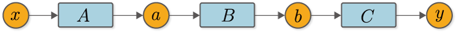
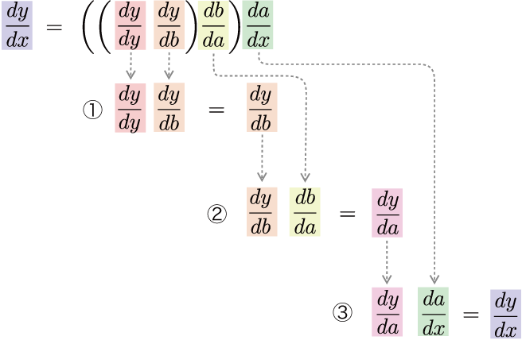
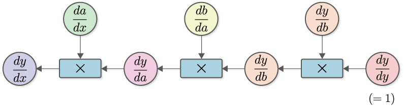
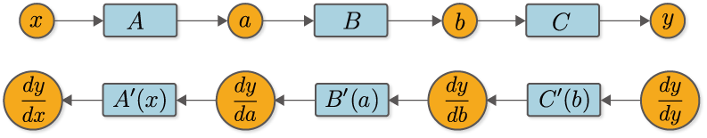

ステップ5 バックプロパゲーションの理論¶
私たちは数値微分によって微分を求めることができました。しかし、数値微分には計算コストと精度の点で問題がありました。バックプロパゲーションは、その2つの問題を解決します！ つまりは、微分を効率良く求めることができる上に、より誤差の小さい値を得ることができるのです。本ステップは、バックプロパゲーションの実装は行わずに理論の説明だけに留めます。そして、次のステップからバックプロパゲーションの実装を行っていきます。
5.1 チェインルール¶
バックプロパゲーションを理解する上でキーとなるのがチェインルール（連鎖律）です。チェイン（chain）とは「鎖」を意味し、複数の関数が連結して使われる様子を表します。チェインルールは、その連結した複数の関数（合成関数）の微分が、それを構成する各関数の微分の積へと“分解”できることを表します。
チェインルールについて具体例を出して説明しましょう。たとえばここに、\(y=F(x)\)という関数があるとします。そして、この関数\(F\)が、\(a=A(x)\)、\(b=B(a)\)、\(y=C(b)\)の3つの関数によって構成されているとしましょう。ちなみに、この関数は計算グラフで書くと、図5-1のようになります。

図5-1 合成関数の例
このとき、\(x\)に関する\(y\)の微分は図5-1で表すことができます。
式(5.1)が示すように、\(x\)に関する\(y\)の微分は、各関数の微分の積によって表されます。つまり、合成関数の微分は、各関数の局所的な微分へと分解できるということです。これがチェインルールです。また、式(5.1)で表されるチェインルールは、次のように、\(\frac{dy}{dy}\)を明示的に含めて書くこともできます。
\(\frac{dy}{dy}\)は「自分自身」に関しての微分であり、その値は常に1になります。そのため、\(\frac{dy}{dy}\)のような「自分自身」に関する微分の積は省略するのが普通ですが、ここではバックプロパゲーションの実装を見越して含めることにします。
NOTE
\(\frac{dy}{dy}\)は、\(y\)の\(y\)に関する微分です。このとき、\(y\)がある微小値だけ変化すると、自分自身である\(y\)も同じ量だけ変化します。そのため、その変化の割合は、どのような関数の場合でも常に\(1\)になります。
5.2 バックプロパゲーションの導出¶
それでは、式(5.2)をじっくりと見ていきましょう。式(5.2)は、合成関数の微分が各関数の微分の積へと分解できることを意味します。しかし、それを「どの順番で掛け算するか」までは明言していません。もちろん、その点は自由に決めることができます。そこで、式(5.3)のように、出力から入力方向へと順に計算していくことを考えます。
式(5.3)のように、出力から入力方向へ――つまり、通常の計算とは逆方向へ――微分の計算を行います。このとき、式(5.3)の計算の流れは図5-2のようになります。

図5-2 出力側の微分から順に計算する流れ
図5-2のとおり、出力\(y\)から入力\(x\)の方向へと掛け算をしながら順に微分を計算していきます。そうすることで、最終的に\(\frac{dy}{dx}\)が求まります。この計算を「計算グラフ」で表すと、図5-3のようになります。

図5-3 \(\frac{dy}{dx}\)を求める計算グラフ
図5-3の計算グラフをよく観察してみましょう。まずは、\(\frac{dy}{dy} (=1)\)からスタートし、\(\frac{dy}{db}\)との積を計算します。ここで、\(\frac{dy}{db}\)は、\(y=C(b)\)という関数の微分です。そのため、関数\(C\)の導関数を\(C'\)で表せば\(\frac{dy}{db}=C'(b)\)と書けます。同様に、\(\frac{db}{da}=B'(a)\)、\(\frac{da}{dx}=A'(x)\)となります。以上の点を考慮すると、図5-3の計算グラフは、次のように簡略化して書くことができます。

図5-4 簡略化した逆伝播の計算グラフ（\(A'(x)\)の乗算は「\(A'(x)\)」というノードで簡略化して表す
図5-4のとおり、導関数との積を1つの関数ノードで表すことにします。これで、微分の流れが明確になります。図5-4を見ると、右から左へと「\(y\)の各変数に関する微分」が伝播することが分かります。これが逆伝播です。ここで重要な点は、伝播するデータは、すべてが「\(y\)の微分」だということです。具体的に書くと、\(\frac{dy}{dy}\)、\(\frac{dy}{db}\)、\(\frac{dy}{da}\)、\(\frac{dy}{dx}\)のように、すべて「\(y\)の〇〇に関する微分」が伝播していることが分かります。
NOTE
式(5.3)のように出力から入力方向へと計算の順番を指定した理由は、\(y\)の微分を伝播するためです。言い換えると、\(y\)を「重要人物」として扱うためです。もし仮に入力から出力方向へと順に計算を行ったとしたら、入力である\(x\)が「重要人物」になります。その場合、伝播する微分は、\(\frac{dx}{dx}\) → \(\frac{da}{dx}\) → \(\frac{db}{dx}\) → \(\frac{dy}{dx}\)となり、\(x\)に関する微分が伝播することになります。また、入力から出力方向へと順に計算するようなカッコの付け方も考えられます。それに基づく手法は「フォワードモードの自動微分」と呼ばれます。フォワードモードの自動微分については、本書の「コラム：自動微分」で説明します。
機械学習の多くの問題は、大量のパラメータを入力として、「損失関数」を最終出力とする形で定式化できます。この損失関数の出力は、（多くの場合）1つのスカラ値であり、これが「重要人物」になります。つまり、損失関数の各パラメータに関する微分を求める必要があるのです。そのような場合、微分を出力から入力方向へと伝播すれば、一度の伝播だけですべてのパラメータに関する微分を求めることができます。この計算効率の良さから、微分を逆方向に伝播する方式が用いられます。
5.3 計算グラフで表す¶
それでは改めて、通常の計算である順伝播の計算グラフ（図5-1）と、微分を求める逆伝播の計算グラフ（図5-4）を上下に並べて書いてみます。

図5-5 順伝播（上図）と逆伝播（下図）
図5-5を見ると、順伝播と逆伝播の間には、明確な対応関係があることが分かります。たとえば、順伝播時の変数\(a\)は、逆伝播時の微分\(\frac{dy}{da}\)に対応します。同様に\(b\)と\(\frac{dy}{db}\)が対応し、\(x\)と\(\frac{dy}{dx}\)が対応します。また、関数にも対応関係があることが分かります。たとえば関数\(B\)の逆伝播は\(B'(a)\)に対応し、\(A\)は\(A'(x)\)に対応します。このように、変数には「通常値」と「微分値」が存在し、関数には「通常の計算（順伝播）」と「微分を求めるための計算（逆伝播）」が存在すると考えられます。そうすれば、バックプロパゲーションの見通しが立ちます。
最後に、図5-5の\(C'(b)\)の関数ノードに注目してみましょう。これは\(y=C(b)\)という計算の微分ですが、ここで注意すべき点は、\(C'(b)\)を計算するには、\(b\)という値が必要になるということです。同様に、\(B'(a)\)を求めるには、入力\(a\)の値が必要になります。これが意味するのは、逆伝播の際には、それに先立ち、順伝播で用いたデータが必要になるということです。そのためバックプロパゲーションの実装では、はじめに順伝播を行い、各関数が入力された変数――上の例では\(x\)、\(a\)、\(b\)――の値を記憶しておかなければなりません。その後で各関数の逆伝播の計算が可能になります。
以上がバックプロパゲーションの説明です。やや複雑な印象を受けたかもしれませんが、ここが本書の中でも最も難解な場所の1つです。まだ腑に落ちない点があるかもしれませんが、実際に動かしてみることで理解が進むでしょう。次のステップではバックプロパゲーションを実装し、実際に動かして検証します。